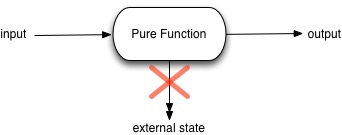

Starting the React track in the curriculum, the most interesting concept that has emerged so far is pure functions. Since I started programming roughly 2 1/2 years ago in college, I've never even considered there would be different species of functions. Well, you learn something everyday, and with newer technology such as React, you may learn something new multiple times a day.
In simple terms a pure function is a function that does not mutate or change any outside data
If I have an array declared with 5 numbers inside of it
var array = [1,2,3,4,5]
And I want to make a function that adds the number 10 to any array that gets passed in, I have 2 options. The impure way, or the way I am pretty much used to doing would be:
function addTen(array) { array.push(10) return array }
Now if I call array again I would get this:
[1,2,3,4,5,10]
The original array has been changed. This isn't what we wanted.
Now that same function written in pure form would be:
function addTen(array) { return array.concat(10); }
It's doing the same thing as the impure function, returning the array passed in with an additional element of 10. But it won't change the original array that was passed in. Now if I call on my array I would get this:
[1,2,3,4,5]
Exactly how it was originally.
Another distinguishing factor of pure functions is no matter how many times I call addTen with the same array, it will give me the same output over and over. If I was to iterate over my array object with the impure version of addTen, by the 5th iteration the return value would be [1,2,3,4,5,10,10,10,10,10]. It would continue to change with every call. Where the pure function continues to give me the same return value no matter what iteration I am on. I will always receive [1,2,3,4,5,10], and the value of my array will always be [1,2,3,4,5]
When does this really come in handy?
If this wasn’t crazy enough, this user can track all of the hosts it ever had, by once again going through the trip listings table created above, and tracking the hosts of all it’s trips, using the host_id.
Writing your programs using pure functions will come into play when you will be working on cpu resource hogging projects. Maybe a game or a really fancy web app with a React front end? Pure functions are great for parallel processing across many CPUs since they are independent from any outside state. They simply don't care what's happening to the code around them. They will work the same way no matter what parameter values get passed into them. (Parallel Processing is when a process gets divided up and executed at the same time by different CPUs on the computer machine)